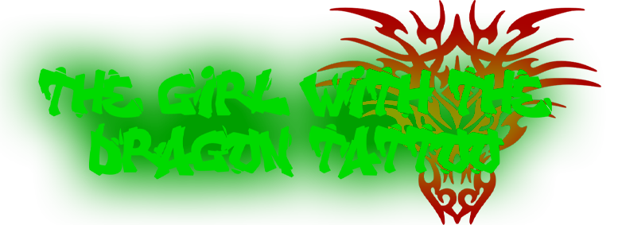
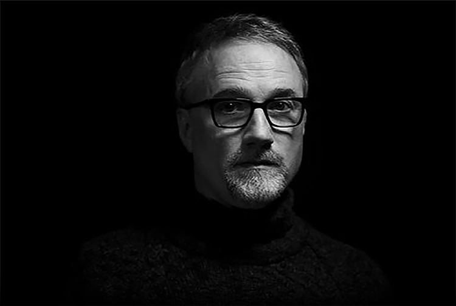
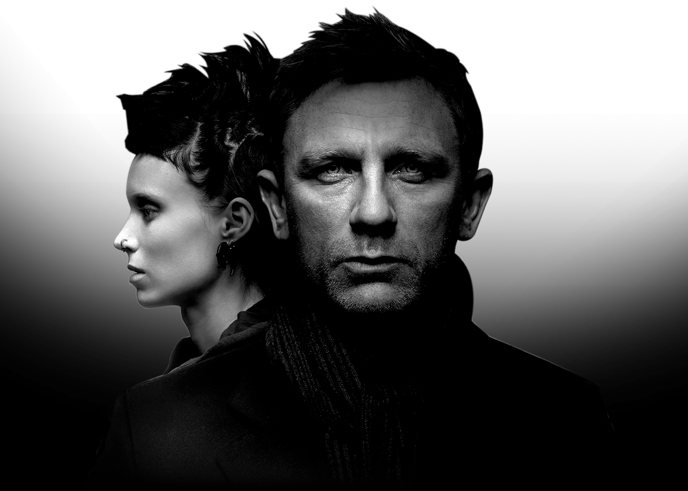

Michael Trent Reznor est le fondateur du célèbre groupe de rock industriel Nine Inch Nails. Indépendant depuis 2007, des années d’expériences derrière lui, il compose et produit sa propre musique. En 2010 il fonde How To Destroy Angels avec sa femme Mariqueen Maandig et Atticus Ross, un projet de post-industriel. Ce dernier est également compositeur et producteur. Il travail sur des films depuis 2004. Partenaire de Reznor, ils ont aujourd’hui plus de 10 bandes originales en collaborations, dont «The girl with the dragon tattoo» en 2011.
« I write most of my songs when I’m in a bad mood »
Trent Reznor

Trent Reznor (1994) et Atticus Ross (2018)

Inspiré du livre de Stieg Larson, le film raconte l’histoire de Mikael Blomkvist, journaliste au mensuel suédois Millennium, enquête à la demande de l'ancien industriel Henrik Vanger sur la disparition de sa nièce, Harriet. Mikael se fait aider par Lisbeth Salander, jeune hackeuse prodige et marginale, pour mener à bien cette enquête aux ramifications tentaculaires. Un lien de confiance fragile va se nouer tandis qu’ils plongent au coeur de secrets familiaux, de scandales financiers et de crimes barbares.
David Fincher, 2020, photo de Jean-Baptiste Mondino
L’album éponyme, contenant 13 titres, a été récompenser au grammy award en 2012 du «Best Score Soundtrack For Visual Media». Il contient notamment une cover du morceau de Let Zeppelin «Immigrant Song», pour plus de 3h d’écoute au total.
Découvrez le avec le morceau: Hidden in snow
Ecoutez l’album en entier sur YouTube :
Rooney Mara (Lisbeth Salander) et Daniel Craig (Mikael Blomkvist)